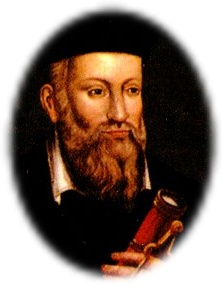
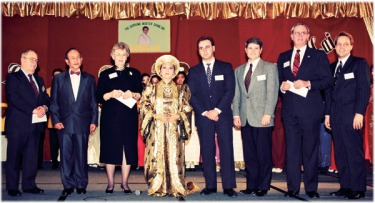
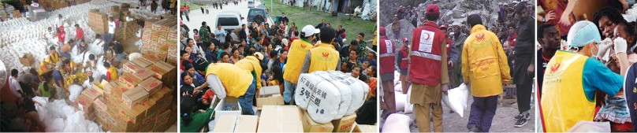
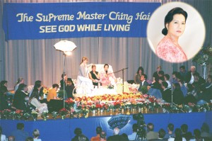
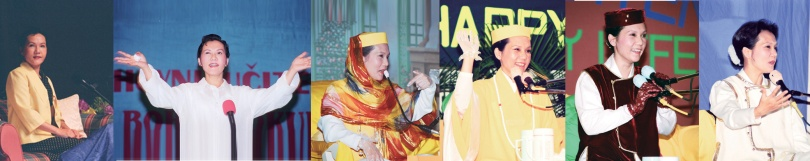
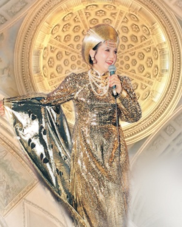
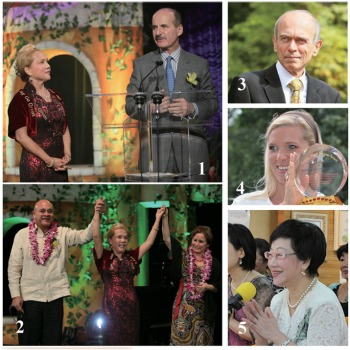
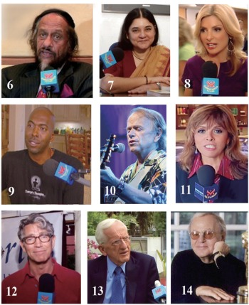
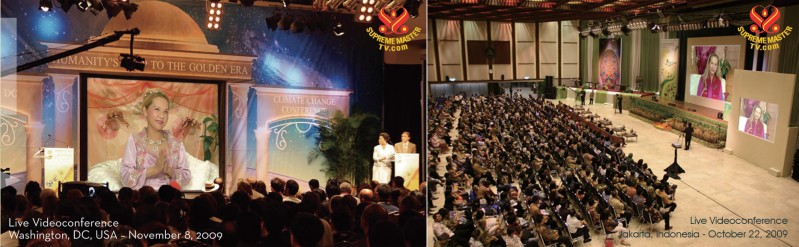
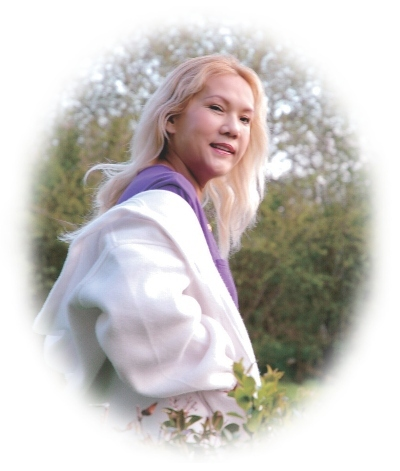

La
Terre avant et après 2012, telle
que prophétisée par Nostradamus
Dans son
célèbre recueil en quatrains Les
Prophéties, Michel de Nostredame,
voyant français du 16e siècle,
prédit l'apparition de nombreux
grands événements mondiaux. Les
experts qui ont étudié les poèmes
disent que Nostradamus a prédit le
Grand Incendie de Londres, la
Révolution française, la Seconde
Guerre mondiale et la tragédie du
11 septembre 2001 aux États-Unis.
Alors que le monde s'approche
rapidement de l'ère du Verseau, du
21 décembre 2012 et du changement
de baktun (cycle) dans le
calendrier maya, les écrits de
Nostradamus font l'objet d'une
attention particulière.
Ceux qui effectuent
des recherches sur d'autres oeuvres
de Nostradamus ont fait des
découvertes remarquables. Par
exemple, en août 2002, le Sun
américain a publié un article de
Grant Balfour, "Nostradamus: I
Know America's Future!"
(Nostradamus : Je connais l'avenir
de l'Amérique !), portant sur une
lettre découverte en France. M.
Balfour a rapporté qu'un groupe
d'experts universitaires respectés
dirigé par le Dr Jeanne LaFobruge*
a conclu que la lettre contenait
un compte rendu des visions de
Nostradamus sur les événements
significatifs récents et à venir
aux États-Unis et ailleurs.
Dans sa lettre,
Nostradamus a non seulement décrit
avec précision la récession
économique internationale et
d'autres événements mondiaux
importants et actuels, mais il a
également évoqué un nouveau
dirigeant qui marquerait le début
de notre monde dans une « ère
d'exploration et de prospérité
illimitée » durant plus de 1 000
ans. Voici quelques extraits de
l'article du Sun à ce
sujet.
Le journal
Sun, le 6 août 2002
Nostradamus : Je connais
l'avenir de l'Amérique !
Par Grant Balfour
Nostradamus,
le prophète le plus précis au
monde, a clairement prédit
l'actuelle Guerre contre la
Terreur et l'avenir immédiat de
l'Amérique.
Les experts disent que des
prophéties renversantes sont
contenues dans une lettre
récemment découverte dans les
archives de la Bibliothèque
Nationale de France. Une fois
que le document manuscrit fut
analysé et authentifié de
manière approfondie, les
autorités françaises ont
contacté Washington, DC pour
l'informer de la découverte
bouleversante.
« La lettre ... se compose de
sept rêves ou visions, chacune
d'elles s'applique directement
aux États-Unis après le tournant
du millénaire », explique le Dr
Jeanne LaFobruge, chef du groupe
d'experts universitaires qui
étudient la lettre de
Nostradamus.
« Il semble que Nostradamus fût
si ému par ces visions intenses
qu'il a immédiatement pris la
plume et les a décrite à un ami
proche et de confiance,
peut-être sa femme ou un moine
local. Au fil du temps, l'écrit
fut conservé, mais sa véritable
signification a été oubliée. Par
chance, le document a survécu. »
« Je dis sciemment 'par chance',
même si c'est peut-être plus que
de la chance. Nos études ont
montré que ces sept rêves sont
directement en lien avec
l'époque actuelle, avec des
événements qui se déroulent ou
sont sur le point d'avoir lieu à
notre époque. »
« Jusqu'à présent, ses
prédictions - les incendies
dévastateurs de cet été, les
inondations meurtrières à San
Antonio au Texas, et à la
sécheresse qui frappe les
États-Unis du Nevada à la
Floride - se sont déjà
réalisées. »
« Peut-être que ce n'est pas un
hasard si la lettre de
Nostradamus réapparaît, comme un
avertissement donné d'en haut
sur les dangers qui nous
attendent. »
Dans le contexte de la Guerre
contre le Terrorisme - une
situation que Nostradamus
appelle « la guerre sans pays,
des ennemis comme du sable » -
le voyant doué a vu deux années
d'événements de portée mondiale,
à commencer par un
bouleversement économique
majeur.
Une
nouvelle Grande
Dépression
«
La première image est celle de
'géants dorés', avec des têtes
pourries tombant sur des masses
entassées de pauvres gens », a
dit le Dr LaFobruge.
Nostradamus est clair en
expliquant qu'il s'agit d'une
scène de dévastation économique.
Le renversement d'entreprises
géantes comme Enron, WorldCom,
ImClone et Tyco se poursuivra à
un rythme alarmant, jusqu'à ce
qu'une vague de désespoir inonde
le marché boursier, conduisant
celui-ci à connaître son plus
bas niveau de tous les temps.
Des millions de gens seront
laissés sans un sou, après que
leurs épargnes et retraites
aient été réduites à néant.
Le processus atteindra un point
de non-retour cet automne, quand
un PDG nourrissant des liens
importants avec le monde
politique échappera aux
procureurs pour s'enfuir en Irak
ou en Libye. Une fois à l'abri
des ennemis américains, ses
gains mal acquis lui permettront
de s'acheter une vie de luxe et
d'aisance.
Alors que les marchés mondiaux
tomberont un à un tels des
dominos, famine et maladies
feront partie du quotidien.
Seuls ceux capables de vivre de
la terre sortiront indemnes de
ces temps troublés.
La
Guerre contre la Terreur
redouble
«
Relativement épargnés par les
difficultés économiques
affectant le reste du monde,
les agents d'Al-Qaïda vont
profiter de la catastrophe et
vont déclencher une nouvelle
attaque dévastatrice par la
mer », indique le Dr
LaFobruge.
Les villes
côtières - probablement Los
Angeles, San Francisco et
Portland - subiront une peste
venimeuse, et des toxines
marines tueront des millions
de poissons et pollueront des
kilomètres de côtes. Dès lors
les ports deviendront
inutilisables et l'odeur de
pourriture favorisera les
maladies mortelles transmises
par l'air.
Les
responsables de l'attaque
seront retrouvés morts à cause
de leurs propres poisons.
Plusieurs d'entre eux étaient
nés au Canada ou aux
États-Unis, laissant les
forces militaires américaines
sans objectif clair de
représailles. ......
Scandale présidentiel
«
Dans la foulée de ce triomphe,
cependant, les enquêteurs
internationaux vont découvrir un
secret dévastateur », dit
LaFobruge.
« 'Les royaumes se
renverseront', a écrit
Nostradamus, 'mais l'aigle sera
blessée à sa crête d'or.' Le
groupe était unanimement
convaincu que cette vision
décrit un scandale terrible,
liant financièrement des
responsables gouvernementaux de
haut rang à des chefs de file du
réseau de la terreur. »
Les liens indéniables
provoqueront un grand
bouleversement au sein du
gouvernement, aboutissant
peut-être à la destitution du
président ou du vice-président.
Fin de la Guerre contre
le Terrorisme
Dans
le chaos politique qui fera
suite à la révélation
dramatique, les terroristes
frapperont à nouveau, en
utilisant les « flammes du ciel
» et enflammeront les grandes
villes d'Europe. Mais peu de
temps avant Noël 2003, l'armée
terroriste sera découverte près
de la ville de Megiddo en Israël
- le site biblique de la
bataille d'Armageddon.
« Un coup décisif porté par la
nouvelle direction américaine -
que Nostradamus surnomme les
'princes temporaires' - va
briser l'organisation terroriste
», explique LaFobruge.
La
paix future, cependant,
s'appuiera sur un 'Plan
Marshall' à long terme au
Moyen-Orient, offrant de l'aide
et des possibilités économiques
aux citoyens ravagés par la
guerre dans les régimes vaincus.
« Selon la lettre, ce n'est
qu'une fois que les vainqueurs
auront relevé ceux tombés dans
la poussière que la paix pourra
couler comme un fleuve,
nettoyant ainsi le monde. »
Seconde
venue
La
reconstruction du gouvernement
américain, des villes
européennes bombardées et du
Moyen-Orient ravagé par la
guerre se réalisera grâce à un
seul dirigeant que Nostradamus
appelle « Faro ». (1)
« Il viendra des montagnes du
nord-est de l'Inde, peut-être du
Tibet, et la prospérité se
manifestera là où il marchera »,
explique Mme LaFobruge.
«
Son organisation combinera les
meilleurs éléments de l'église
et de l'État pour nourrir les
affamés (2) et
enseigner de nouvelles
techniques de prière. »(3)
Bien qu'actif avant la fin de la
Guerre contre le Terrorisme, ce
leader mondial verra sa
véritable identité révélée
seulement après la victoire
finale.
«
Pour sa vision finale,
Nostradamus a écrit : 'Alors que
les cloches sonnent à Londres (4),
à l'époque du
Scorpion, le nouveau Jésus
montre son visage à tous dans
les villes insulaires du
Nouveau Monde (5).L'océan chante -
miracle !(6)
- pour
voir le Seigneur ressuscité'
», dit Mme LaFobruge.
« Cette vision indique
clairement plusieurs choses à
propos de ce mystérieux héros du
Tibet. Il ira à Hawaï ou Porto
Rico, peut-être pendant un tour
du monde... Un événement
miraculeux sera observé par le
monde, et il aura lieu en
novembre 2004.
«
Le plus important est que ce
miracle ne laissera aucun doute
sur le fait que cet homme, Faro,
n'est autre que la seconde venue
du Christ lui-même. »
La
jeunesse éternelle
Une
fois accepté en tant que leader
du monde, le nouveau Messie
remplacera tous les
gouvernements par un groupe de
réflexion scientifique dont la
seule responsabilité sera de
résoudre les problèmes de
l'humanité.
« Le premier problème éliminé
par ce dénommé 'Parlement des
sages' (7) sera
le vieillissement humain »,
indique Mme LaFobruge. « En
2006, ils auront résolu le
problème - et personne ne
vieillira alors plus. (8)
Suite à
cette découverte étonnante
s'en viendra un âge
d'exploration et de prospérité
illimitée durant plus de 1 000
ans.
Fin de l'extrait
Notes:
(Les
points de vue suivants ne
représentent pas
nécessairement ceux du Sun
ou de M. Balfour.)
Le
Maître Suprême Ching Hai
en habit de moine tibétain
durant ses premières
années.
La
description de Nostradamus de la
Seconde venue du Christ et
l'explication de Mme LaFobruge à
propos de la mission du Messie ont
une ressemblance remarquable avec
la vie noble de l'enseignante
spirituelle de renommée mondiale,
humanitaire et artiste, le Maître
Suprême Ching Hai, et le travail
de son Association. Voici quelques
exemples concernant les prophéties
citées dans l'article :
1. « La
reconstruction du gouvernement
américain, des villes
européennes bombardées et du
Moyen-Orient ravagé par la
guerre se réalisera grâce à un
seul dirigeant que Nostradamus
appelle 'Faro'. Il viendra des
montagnes du nord-est de l'Inde,
peut-être du Tibet, et la
prospérité se manifestera là où
il marchera. »
'Faro'
en espagnol signifie 'phare'.
Le
Maître Suprême Ching Hai a atteint
l'illumination complète dans
l'Himalaya et a été au Tibet et en
Inde avant d'être sollicitée pour
partager Ses enseignements avec le
public.

Le Maître
et les représentants des
gouverneurs de six États
Chicago, États-Unis (22
février 1994)
Lauréate
du Prix du Leadership
Spirituel Mondial, décerné en
1994 par les gouverneurs de six
États américains, le Maître Suprême
Ching Hai est depuis longtemps un
phare spirituel.
Le Maître Suprême
Ching Hai agit encore pour ramener
la paix paixdans toutes les
parties du monde et réaliser le
rêve du « paradis sur Terre »
pour tous les êtres.
2.
« Son organisation combinera
les meilleurs éléments de
l'église et de l'État pour
nourrir les affamés... »
En outre le Maître
et son groupe ont aidé des réfugiés,
des orphelinats et de nombreuses
organisations bénéfiques aux êtres
humains, aux animaux et à
l'environnement. Effectuant souvent
des dons anonymes, le Maître Suprême
Ching Hai fait toujours ce qu'elle
peut, à chaque instant et en tout
lieu où l'aide est nécessaire.

3. «... enseigner
de nouvelles techniques de
prière »
Le Maître Suprême
Ching Hai pratique et partage une
technique de méditation appelée la Méthode Quan Yin,
à travers laquelle il est possible
d'atteindre une union plus profonde
avec le Créateur par la contemplation de
la Lumière et du Son intérieurs.
La Lumière intérieure, ou la lumière
de Dieu, est la même lumière que
l'on trouve dans le mot «
illumination ». Elle resplendit
comme la sagesse et la compassion.
La vibration cosmique, ou Son
intérieur, est toute-puissante et
omniprésente ; elle se manifeste
également sous forme de mélodie
intérieure de l'amour divin et peut
guérir toutes les blessures,
satisfaire tous les désirs et
étancher toutes les soifs du monde.
Forme la plus profonde et la plus
efficace de prière véritable, la
technique de méditation enseignée
par le Maître Suprême Ching Hai
permet ainsi l'aspirant spirituel
sincère d'être transporté vers les
hautes sphères de l'existence par le
contact avec les enseignements
directs de Dieu.
4. «
Les cloches sonnent à Londres...
»

Londres,
Royaume-Uni (9 juin 1999)
Le Maître Suprême
Ching Hai a passé beaucoup de temps
en Angleterre alors qu'elle était
une jeune adulte effectuant ses
études universitaires ; elle est par
la suite devenue une citoyenne
naturalisée britannique. Ces
dernières années, elle a souvent
voyagé et résidé dans ce pays ; elle
est ainsi retournée à
Londres à de nombreuses
reprises pour y prononcer des
conférences et donner l'initiation
aux chercheurs de Vérité. Au cours
d'une conférence organisée dans le
cadre de la tournée européenne
de 1999, sa visite en
Angleterre a coïncidé avec la
signature du Traité de paix du
Kosovo. Les cloches sonnant à
Londres pourraient bien désigner la
paix retrouvée dans cette région,
ainsi que l'arrivée du porteur de
lumière « Faro » tel que l'a vu
Nostradamus ; l'ancienne élève de la
grande ville est de retour en tant
que Maître - un motif de véritable
célébration par tous.
5.
« '...le nouveau Jésus montre
son visage à tous dans les
villes insulaires du Nouveau
Monde'... Cette vision indique
clairement plusieurs choses à
propos de ce mystérieux héros
du Tibet. Il ira à Hawaï ou
Porto Rico, peut-être pendant
un tour du monde. »
Répondant aux
demandes des aspirants spirituels,
le Maître Suprême a voyagé dans le
cadre d'une série de tournées à travers
le monde, offrant des
conférences sur presque tous les
continents. En 1989 et 1993, elle
s'est ainsi rendue dans plusieurs
villes dont Los Angeles, Seattle,
Washington, DC, situées sur ou près
des îles d'Amériques du Nord et du
Sud. Des conférences ont également
eu lieu à New York sur l'île de
Manhattan, et à Mexico, qui a été
bâtie à l'origine par les Aztèques
indigènes sur une île du lac
Texcoco.

Helsinki,
Finlande
(Mai 1999)
Prague,
République tchèque
(Mai 1999)
Paris, France
(Avril 1993)
Hawaï,
États-Unis
(Mars 1993)
Washington
D.C., États-Unis (Avril 1993)
Colorado,
États-Unis
(Avril 1993)
Le Maître Suprême
Ching Hai a été invitée à prendre la
parole dans l'État américain
insulaire d'Hawaii en 1993
et y a par la suite tenu une
retraite de méditation
internationale. Son dévouement
désintéressé à l'humanité a été
reconnu par le feu honorable maire
Frank Fasi de Honolulu à Hawaii en
1993, quand il lui fut accordé la
citoyenneté américaine honorifique
et la Décoration de la
Paix Internationale. Elle a
également passé un certain temps sur
Coconut Island à Hawaii, et plus
tard sur l'île de Saint-Marin à
Miami Beach en Floride, ainsi que
dans le sud de la Floride, où
beaucoup d'étudiants de la Méthode
Quan Yin ont eu la chance de se
joindre à elle lors de
rassemblements spirituels.

6. « L'océan chante -
miracle ! (6) - pour voir le
Seigneur ressuscité »
Le nom du Maître
Suprême, « Ching Hai », signifie «
océan pur » ou « mer claire » en
chinois. Au cours de nombreuses
années de partage de la Vérité, le Maître
spirituel a accordé grâce et
miracles à d'innombrables
âmes. Artiste et musicienne aux
multiples talents, elle est un
Maître spirituel extrêmement rare
qui peut transformer la conscience
des gens par ses talents inspirants,
notamment dans les domaines du chant, de la
poésie et de la musique. Ses
chansons et sa musique sont animées
d'une vibration d'amour qui apporte
une guérison incroyable, une
purification et une élévation
spirituelle, et qui répond à
l'aspiration d'innombrables âmes à
retourner au Ciel. Un éveil
spirituel se manifeste à travers le
monde - comme lorsque « l'océan
chante », les bénédictions divines
affluent et les miracles se
produisent.


Voir la
légendre des photos en bas
de page.
7. «
Une fois accepté en tant que
leader du monde, le nouveau
Messie remplacera tous les
gouvernements par un groupe de
réflexion scientifique dont la
seule responsabilité sera de
résoudre les problèmes de
l'humanité... 'Le Parlement des
sages' »
En 2006, le Maître
Suprême Ching Hai a inspiré le
lancement de Supreme Master
Television, une chaîne de
télévision, traduite en plusieurs
langues, diffusée 24 h sur 24 et
regardée par des millions de
personnes à travers le monde via
satellite et sur plus de 90 réseaux
câblés et télévisions par Internet.
Cette chaîne unique était axée sur
des informations et des programmes
constructifs visant à inspirer la
paix à travers des exemples
remarquables de l'excellence au sein
de l'humanité et à travers des
styles de vie nobles. Particularité
intéressante, la chaîne présentait
des solutions pratiques et efficaces
au réchauffement climatique - un
enjeu mondial majeur de notre
époque. Parmi les émissions
diffusées figuraient des conférences
sur le changement climatique, des
entretiens avec des scientifiques de
la NASA lauréats de prix Nobel, des
responsables gouvernementaux et des
experts de l'environnement.
Tout au long des cinq ans de
diffusion de la chaîne, le Maître
Suprême Ching Hai s'est elle-même
exprimée fréquemment lors de vidéoconférences
télévisées avec des
responsables gouvernementaux,
d'éminents scientifiques, des
médecins, des artistes, des groupes
de protection de l'environnement et
des organisations de protection des
animaux ; elle a ainsi partagé des
solutions pratiques et des idées
spirituelles pour résoudre les
problèmes mondiaux urgents.
Transcendant tous les gouvernements
et les frontières nationales, ce
forum de diffusion unique a permis
de partager avec la communauté
mondiale les messages de paix et de
sagesse collective d'experts de
renommée mondiale - ce qui en
faisait un véritable « Parlement des
sages ».

8. « ...personne ne vieillira
alors plus. »
La plupart des
Écritures saintes désignent l'état
d'être « toujours jeune » ou d'avoir
« la vie éternelle » comme un niveau
de réalisation spirituelle qui
signifie que l'on a transcendé le
cycle de la naissance, de la
vieillesse et de la mort, qui
contraint tous les mortels. La
méditation sur la Lumière et le Son
transmis par le Maître Suprême Ching
Hai promet de rétablir notre
conscience de la nature éternelle de
l'âme, ainsi que la pleine
libération du cycle de la naissance
et de la mort physiques.
Les prophéties de Nostradamus ont
été en grande partie rédigées en
quatrains, et comptent de nombreux
symbolismes et anagrammes qui
rendent leur déchiffrage difficile
et constituent ainsi un moyen
d'échapper à la persécution possible
des autorités de l'époque. Peut-être
n'est-ce pas un hasard que le sens
du nom français de Nostradamus,
Michel de Nostredame, soit « Michel
'Ange' de Notre-Dame
». Dans un de ses quatrains,
Nostradamus fait référence à
lui-même comme « l'avant-dernier de
la famille du prophète (Le
penultiesme du surnom de prophète)
», qui apportera l'impossible à un
grand peuple. Les quatre dernières
lettres de son nom latinisé,
Nostradamus, sont lorsqu'on les
écrit à l'envers, « SUMA
» - un terme régulièrement utilisé
dans le passé pour désigner le
Maître Suprême Ching Hai (SU :
Suprême ; MA : Maître). Dans le
quatrain 3-94, il a décrit une issue
glorieuse de cette mission divine :
Cinq cents ans après,
Celui qui était l'ornement de son temps,
D'un coup, une grande clarté donnera
Et rendra par ce siècle les gens très contents.
(De cing cens ans plus compte lon tiendra,)
(Celuy qu'estoit l'ornement de son temps; )
(Puis a un coup grand clarte donra,)
(Quiu par ce seicle les rendra tres contens.)
Dans une lettre
sincère à son fils, Nostradamus a
indiqué que ses prophéties
s'étendraient de son époque à l'an
3797. Il a expliqué : « Cela peut
perturber certains, quand ils voient
un tel laps de temps, (mais) cela va
se produire et être compris dans
toute la plénitude de la République
; ces choses seront universellement
comprise sur la Terre, mon fils. »
Depuis le début de ses conférences
publiques en 1988, le Maître Suprême
a souvent parlé de franchir le seuil
de l'Âge d'Or, la
période de 1 000 ans d'exploration
et de prospérité illimitée par
Nostradamus. Au fil des ans, elle a
travaillé sans relâche dans les
royaumes spirituels et physiques
pour élever la conscience des êtres
vivants en vue de cette transition,
tout en promouvant le régime
végétalien, la compassion envers
tous les êtres et une manière juste
de vivre. En l'an 2004, au cours
d'une retraite personnelle intensive
qui a duré plus de deux ans, elle a
envoyé plusieurs messages aux
membres de l'Association, pour les
informer d'une nouvelle Ère d'Or
et de la bénédiction du Ciel sur
tous les êtres sur Terre. Dans une
lettre, elle a écrit : « Cette planète a subi des
changements considérables pour son
amélioration. Beaucoup de
purification et de bénédiction ont
été accordées à ce monde dans tous
les aspects. Emplissez-vous de cet
amour qui ne se manifeste qu'une
fois au cours de plusieurs éons,
car il s'agit de votre refuge
absolu - tandis que le nettoyage
prend effet autour de vous.
Méditation, nobles préceptes et
amour inconditionnel vous
attireront davantage vers le champ
de la Grâce positive. »

Archive
photo : Hongrie (2005)
Quelques mois plus
tard, lors d'un échange avec
des amis initiés en février 2005
en Hongrie, elle a de nouveau
parlé de cette évolution prometteuse
pour la planète : « Surtout
en ce moment, durant la période de
transition, lorsque la Terre se
joint aux galaxies les plus
développées, tout est béni et
ouvert pour les fidèles.
» Elle a également conseillé à
chacun de passer plus de temps en
méditation profonde au cours de
cette période spéciale.
La vie du Maître
Suprême Ching Hai est bel et bien
une manifestation de la bénédiction
divine. Jamais dans l'histoire un
Maître illuminé n'a su réunir autant
de gens de tant de nationalités, de
cultures et de religions. Comme l'a
fait observer l'honorable Frank
Fasi, maire d'Honolulu : « Elle
apporte l'amour dans le monde là où
il y a la haine. Elle apporte
l'espoir là où il y a le désespoir.
Et, elle apporte la compréhension là
où il y a malentendu. Elle est la
lumière d'une grande personne, un
ange de miséricorde pour nous tous.
»
Tandis que la conscience humaine
s'élève, suivant l'évolution
naturelle de l'univers tout entier,
réjouissons-nous de cette grande
nouvelle à propos de l'aube de
l'éveil et de la noble vision de
paix et d'harmonie pour tous les
êtres sur Terre. Puissent un nombre
croissant de gens être inspirés par
la lumière de « Faro » et choisir de
mener une vie d'amour et de
compassion. Nous prions pour que
tous les enfants du Divin - humains,
animaux, plantes et autres créations
- vivent ensemble dans la paix et le
bonheur dans le paradis appelé la
Terre, comme Dieu l'a voulu et comme
le prophète bien-aimé, Michel de
Nostredame, l'a prédit !
***
Légendes des
photos de la note 7 :
(Photo 1) Le Maître Suprême
Ching Hai et Son Excellence Jose
Maria Figueres, ancien président
du Costa Rica
(Photo 2) Le Maître Suprême avec
l'honorable maire de Cancun,
Jaime Hernandez Zaragoza, et son
épouse
(Photo 3) Le Dr Janez Drnovsek,
2e Président de la Slovénie
(végétalien)
(Photo 4) Son Altesse la
Princesse Maja von Hohenzollern
(Photo 5) Son Excellence Annette
Lu Hsiu-lien, ancienne
vice-présidente de la République
de Chine (Taïwan)
(Photo 6) Le Dr Rajendra
Pachauri (végétarien), président
du Groupe d'experts
intergouvernemental des Nations
Unies sur l'évolution du climat
(GIEC)
(Photo 7) Son Excellence Maneka
Gandhi, membre du Parlement de
l'Inde (végétalienne)
(Photo 8) Mme Lisa Bloom,
avocate des droits civils et
analyste juridique américaine
(végétalienne)
(Photo 9) John Salley, quadruple
champion de basketball de la NBA
(végétalien)
(Photo 10) Al Jardine, chanteur
et fondateur des Beach Boys
(Photo 11) Mme Jane
Velez-Mitchell, journaliste de
CNN lauréate d'un Emmy
(végétalienne)
(Photo 12) Eric Roberts, acteur
nominé aux Oscars (végétalien)
(Photo 13) Le Dr T. Colin
Campbell, auteur du best-seller
Le rapport Campbell (végétalien)
(Photo 14) Al Kasha, compositeur
lauréat de deux Oscars
(Des centaines
de sages, dirigeants mondiaux,
scientifiques, universitaires
et saints peuvent être trouvés
sur www.suprememastertv.com)
Pour plus
d'informations sur le lien entre
le Maître Suprême Ching Hai et
les Prophéties de Nostradamus,
annonçant la venue d'un Grand
Maître, référez-vous à notre
article du magazine n°108 à
l'adresse suivante : http://www.godsdirectcontact.org.tw/eng/news/108/p-2.htm
Une personne phare pour le Nouvel Âge - Un nouveau Messie
annonce paix et prospérité